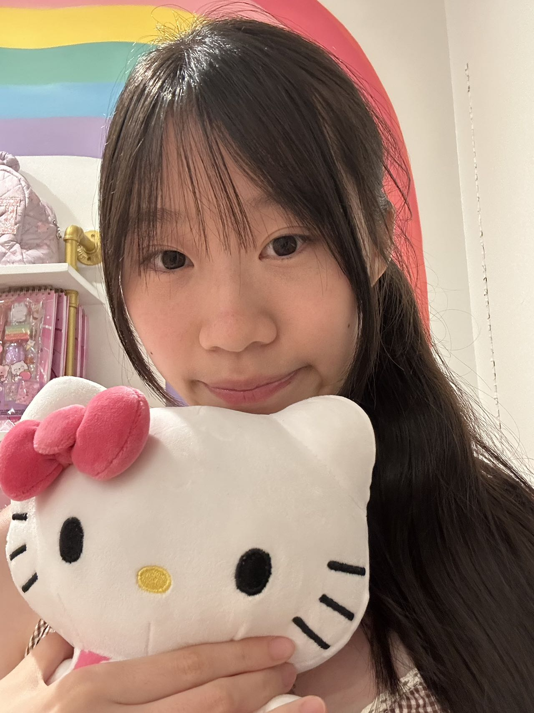
I'm Kara Wang, a junior at Westwood High School in Austin, Texas. Whether I'm debugging ML models at UT Austin's High School Research Academy, performing as first chair in my orchestra at Lincoln Center, or co-designing health education curricula for communities in Nigeria — I bring the same principle: show up fully, think deeply, and serve others.
I speak English and Chinese (State Seal of Biliteracy), code in Java and Python, and have studied piano since kindergarten and violin since 4th grade. I'm always looking for ways to connect my interests — science, music, and service — into something greater than the sum of its parts.
Westwood High School, Austin, TX
Computational chemistry, pharmacology, and gene editing
Evaluated Open Catalyst Project ML models predicting polyethylene glycol adsorption on zinc surfaces. Compared machine learning potentials with density functional theory simulations, installed and debugged research software, and presented findings at a research symposium.
Studied biochemical pathways and pharmacologic mechanisms of imatinib resistance in CML. Analyzed PI3K/Akt/mTOR and NF-kB signaling pathways using PubMed and PubChem, created pathway visualizations with BioRender, and presented research to ~30 students and adults.
Investigated CRISPR-based therapy mechanisms for sickle cell disease using NCBI literature. Evaluated treatment efficacy, risks, ethical concerns, and accessibility challenges. Produced a written analysis evaluating personal medical decision-making relating to CASGEVY.
Piano since kindergarten · Violin since 4th grade
Piano Competition Performance — Janice Kay Hodges Competition
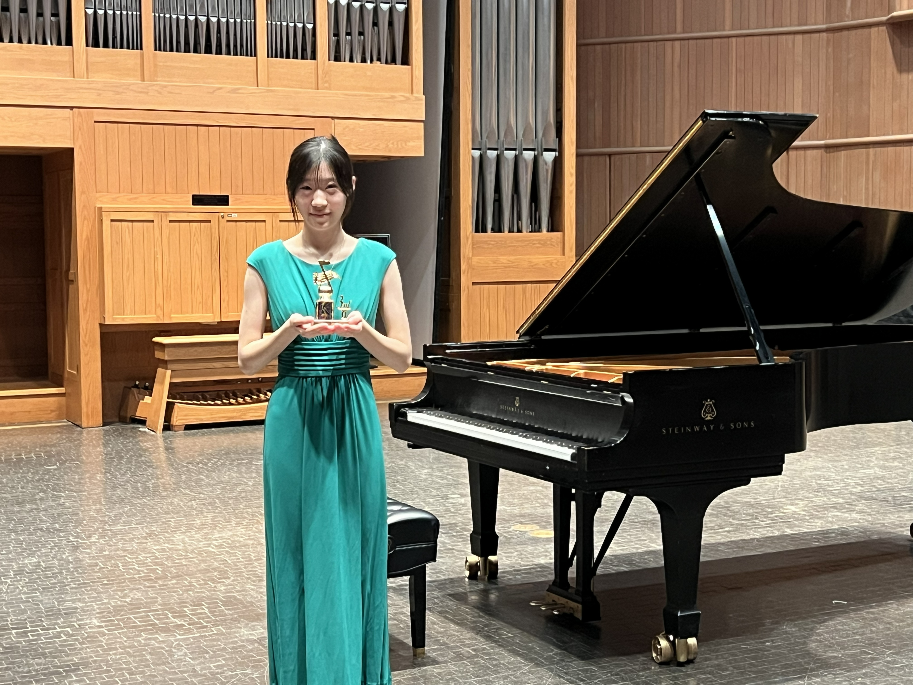
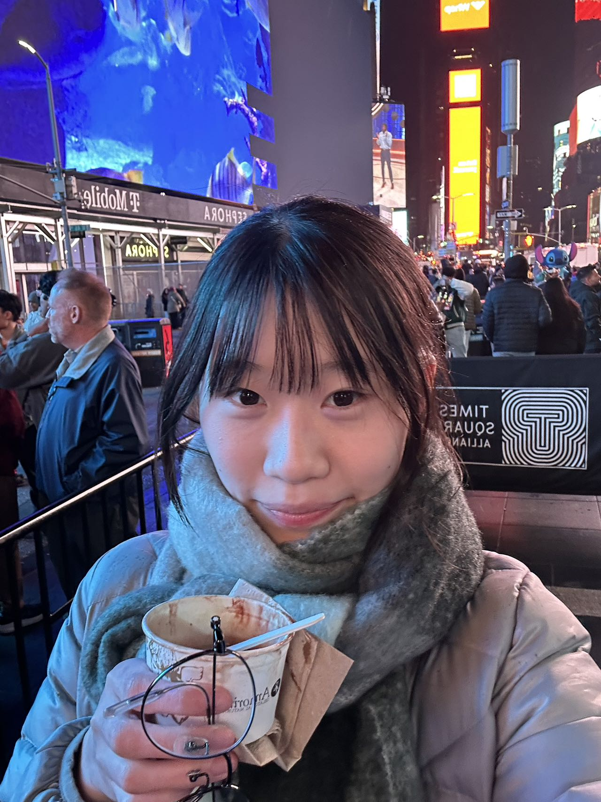
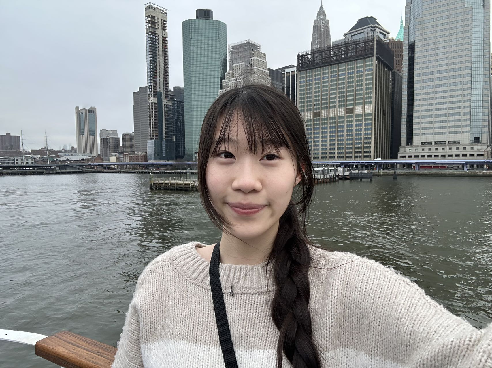
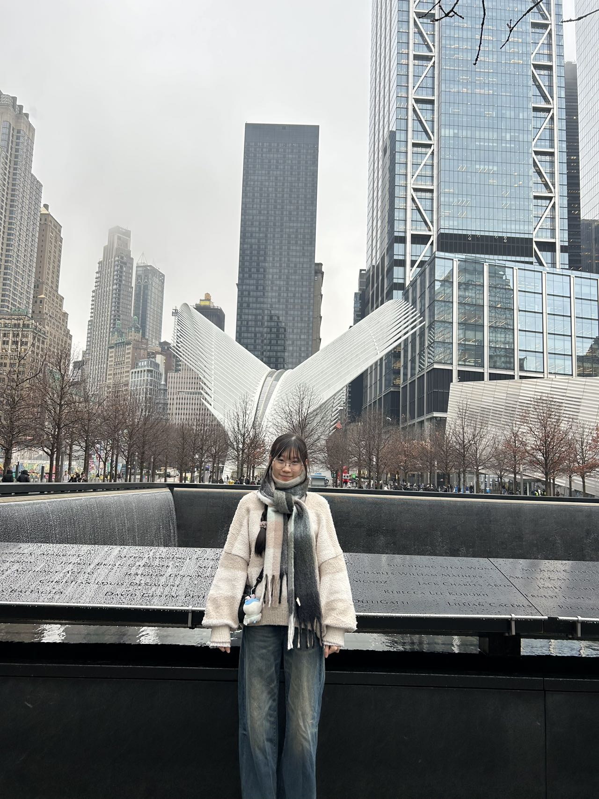
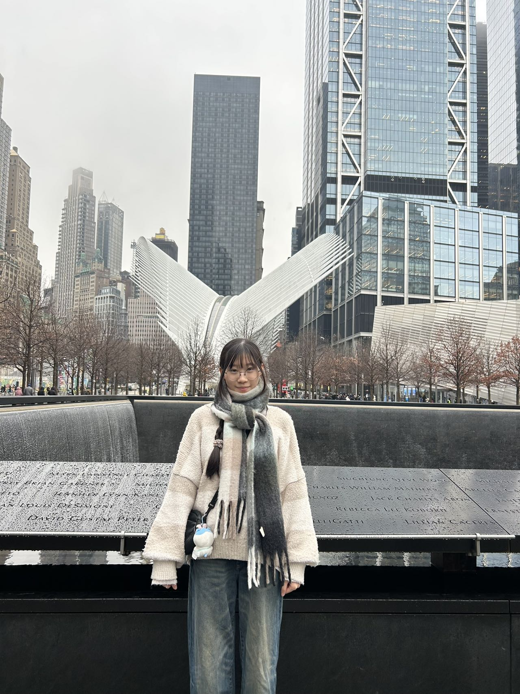
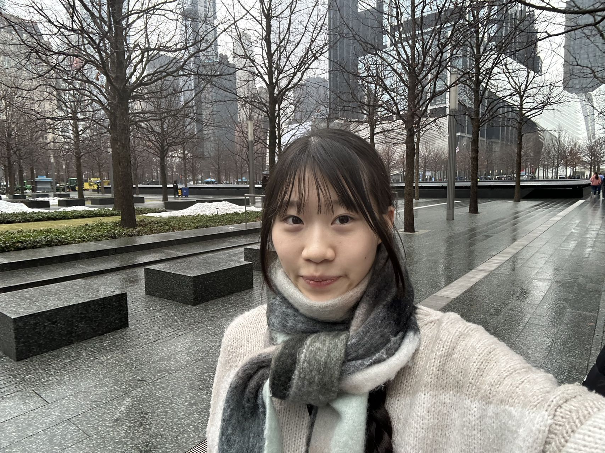
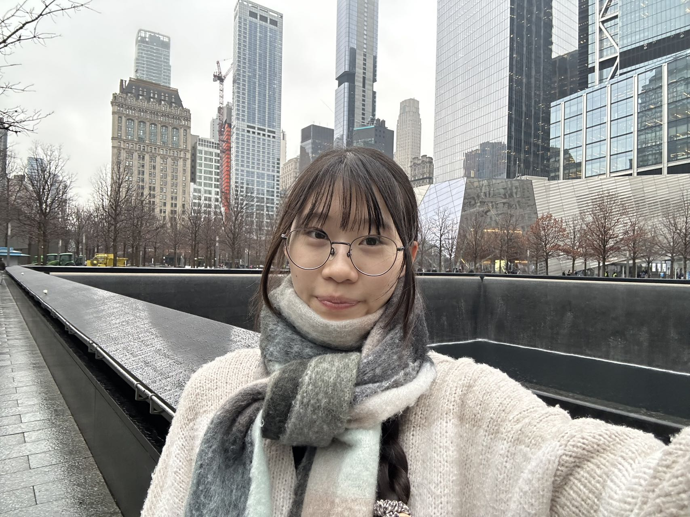
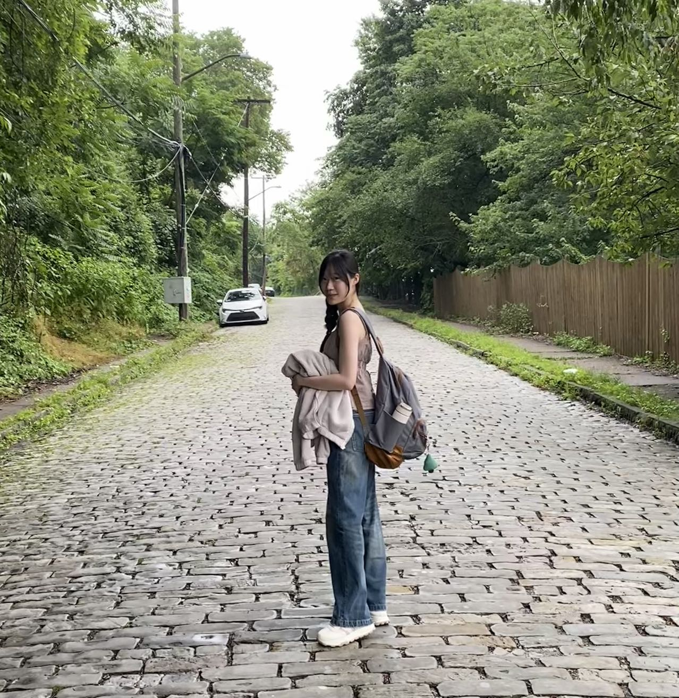
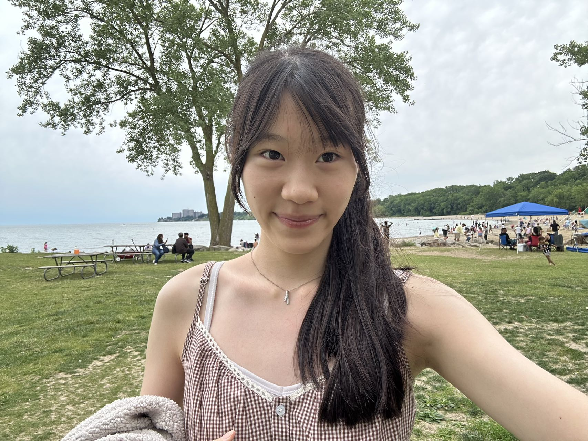
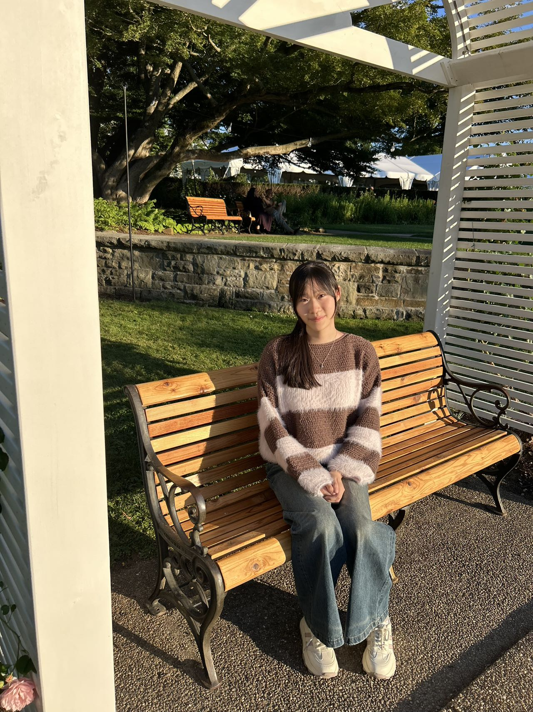
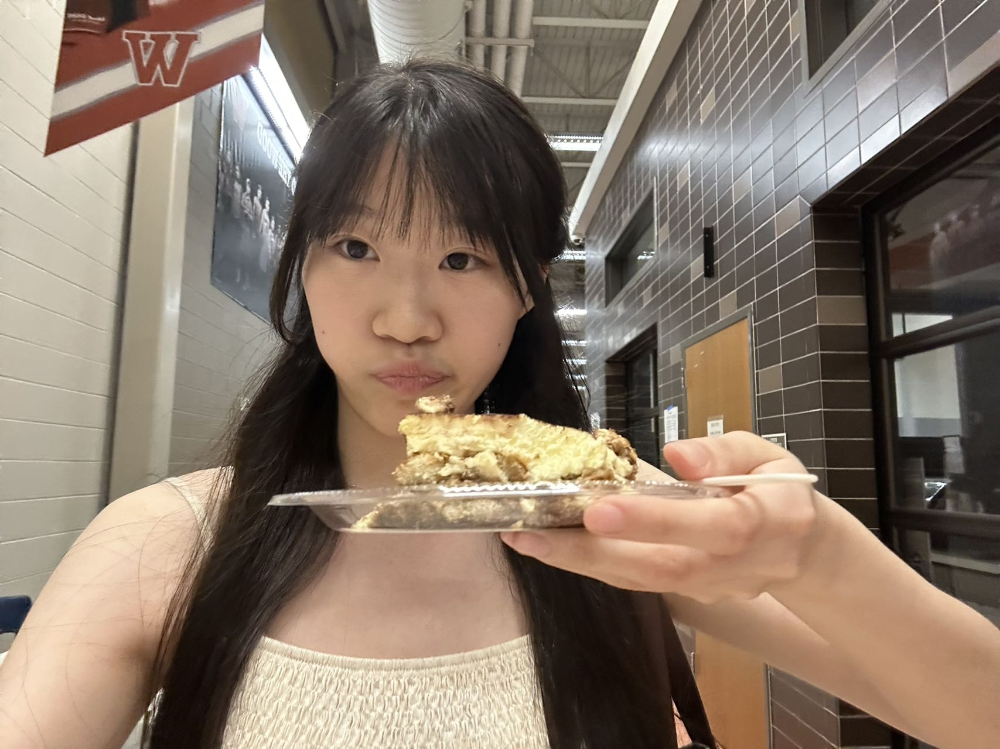
From local Austin parks to communities in Nigeria
12+ months of voluntary service, physical activity, and skill development. Organized a 2-day, 1-night adventurous hiking and camping journey.
100+ hours of community health and medical volunteer service submitted for international recognition.
Solo, Duet, & Concerto events. One winner per division statewide. Superior ratings at District across all categories.
Contemporary piano repertoire by living composers alongside traditional works, 2023–2025.
Performed with Westwood Symphony Orchestra at the national level in New York City.
Top-ranked full orchestra in the state through the Texas Music Educators Association.
Collaborated with industry mentors; created a character concept used as inspiration for an official website design.
DCF valuation, financial statement analysis, and private equity investment capstone.
Health Informatics testing events, fundraising, and service.
Global health awareness and medical relief efforts.
Hospitality & Business Management research events; produced 20-page strategic plans and presented at district competitions.